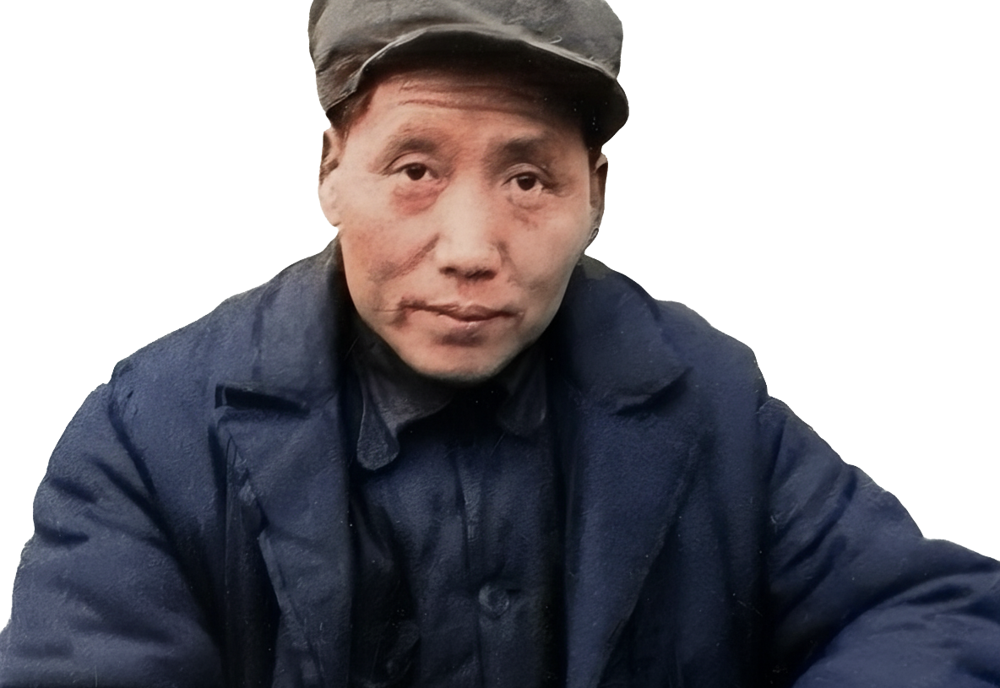

当你想不通、扛不住、万念俱灰地独自走在茫然无人的雨夜，犹豫、彷徨、绝望的时候，就凝视这照片。
看看这个中年丧妻，老年丧子，一生中六起六落，十一次大难不死，四次被重金通缉买他的首级的男人......
拍照片时，36岁的他，坚持自己的意见却无人相信，被警告处分，开除党籍，落选职务，发配地方，妻儿无踪，重病缠身，独自养病，吐血发烧，无人问津，甚至被组织发了讣告。
那时候他给朋友写信求助，说"想老婆孩子了"。
那时候的他是怎么坚持下来的？
